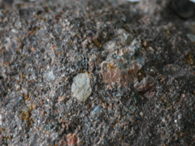
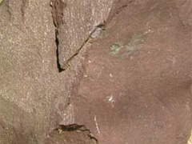

생성원리

정의 Definition
지표에 노출된 암석은 끊임없는 풍화작용과 침식작용을 받아 원암에서 분리된 암설 또는 수용액을 형성하게 됩니다. 퇴적암은 원암에서 분리된 이러한 물질들이 육상이나 해저에 쌓여 고화된 암석으로 크게 쇄설성, 화학적, 유기적 퇴적암으로 나눌 수 있으며, 대표적 퇴적암으로는 역암, 사암, 셰일, 이암, 석회암, 백운암, 각력암 등이 있습니다.
종류 Class
총 13종의 이미지가 있습니다.


이름 (name)
역암-1(conglomerate)
특 성 (characteristics)
- 가) 개요
- 유수 및 파도의 작용으로 침식되고 운반된 물질이 수저에 퇴적된 쇄설성 퇴적암의 하나로, 둥근 역(gravel)들 사이에 모래나 점토가 충진되어 교결된 암석을 말한다. 역의 양은 전체 퇴적물의 30% 이상이어야 하고, 주로 해안이나 얕은 바다, 하안이나 하저에 퇴적된다.
- 나) 분류
- 역을 제외한 기질의 함량이 15% 이하인 것을 정역암(orthoconglomerate)이라 하고 15% 이상인 것을 준역암(paraconglomerate)이라 한다. 또한 원마도가 높은 둥근 역의 함량이 많으면 원력암, 각진 역의 함량이 많아 원마도가 낮은 역암을 각력암(breccia)이라 한다.
다) 산출지 : __, __, 전남 해남(사진좌측부터)
이름 (name)
역암-2(conglomerate)
특 성 (characteristics)
가) 개요
유수 및 파도의 작용으로 침식되고 운반된 물질이 수저에 퇴적된 쇄설성 퇴적암의 하나로, 둥근 역(gravel)들 사이에 모래나 점토가 충진되어 교결된 암석을 말한다. 역의 양은 전체 퇴적물의 30% 이상이어야 하고, 주로 해안이나 얕은 바다, 하안이나 하저에 퇴적된다.
나) 분류
역을 제외한 기질의 함량이 15% 이하인 것을 정역암(orthoconglomerate)이라 하고 15% 이상인 것을 준역암(paraconglomerate)이라 한다. 또한 원마도가 높은 둥근 역의 함량이 많으면 원역암, 각진 역의 함량이 많아 원마도가 낮은 역암을 각력암(breccia)이라 한다.
다) 산출지 : 부산, __, __(사진좌측부터)

이름 (name)
사암(sandstone)
특 성 (characteristics)
- 가) 개요
- 모래 크기의 광물이나 암석 입자(1/16mm~2mm)가 주로 구성된 퇴적암으로, 전체 퇴적암의 약 25%를 차지하며 풍화에 대한 저항력이 크다. 주 구성광물은 석영, 장석, 암편이고 그외 여러 종의 부수광물이 소량 포함되며 5~20% 정도의 공극률을 가진다.
- 나) 광물구성
- 일반적인 사암의 주 구성광물은 석영(quartz), 장석(feldspar), 암편이다.
석영은 평균 65% 정도 함유되어 있는데 이는 석영의 경도가 7로 단단하며 안정도가 높아 풍화에 강하기 때문이다.
장석은 대부분 K-장석이며, 공급지의 원암 종류에 따라 그 양이 좌우되지만 화학적 풍화에 매우 약해 기후조건에 의해 제거된다는 점도 고려해야 된다.
암편은 사암의 평균 10~15% 차지하며 변성암 기원의 암편에는 운모류가 주로 포함되어 있다. 하지만 암편과 부수광물은 원암의 종류와 퇴적경로에 따라 광물의 종류와 함량이 달라지기 때문에 암석의 구성광물을 명확히 단정짓기는 어렵다.
다) 산출지 :
- 
이름 (name)
장석질사암(feldspathic sandstone)
특 성 (characteristics)
- 가) 개요
- 장석(feldspar)이 석영(quartz)과 암편에 비해 많이 함유되어 있는 사암의 한 종류로, 분급은 매우 나쁘고 원마도는 각이 지거나 아각 형태가 대부분이다. 장석은 화학적 풍화에 약하기 때문에 장석의 공급암에서 거리가 가깝거나, 공급지의 풍화작용이 미약해야 장석이 제거되지 않고 퇴적될 수 있다. 또한 장석이 풍부한 화성암 기원의 퇴적물이 다량 유입되어 장석질사암이 만들어질 수도 있다.
- 나) 광물구성
- 장석(feldspar), 석영(quartz), 암편이 주구성광물이며, 특히 장석의 함유량이 10% 이상일 때 장석질 사암이라 한다.
장석질 아레나이트(arenite)와 장석질 와케(wacke)를 포함하며 장석의 함유량이 25% 이상일 때는 아코즈(arkose)라고 한다.
다) 산출지 : 미국
이름 (name)
적색사암(red sandstone)
특 성 (characteristics)
- 가) 개요
- 말 그대로 적색을 띠는 사암이다. 사암이 적색을 띠는 이유는 산화철 광물인 적철석(hematite:Fe2O3)이 암석 내 입자 사이를 얇게 덮고 있기 때문이다. 철이 다량으로 산화될 수 있는 환경에서 주로 발생한다.
- 나) 광물구성
- 주 구성광물은 석영(quartz), 장석(feldspar), 암편이지만, 부수광물인 적철석이 색을 결정짓는 중요 광물이다.
다) 산출지 : 미국, 미국, 경북 의성(사진좌측부터)
- 
이름 (name)
셰일-1(shale)
특 성 (characteristics)
- 가) 개요
- 점토(clay)와 미사(silt) 크기의 매우 작은 입자로 이루어진 퇴적암으로, 일반적으로 입자의 크기가 1/16(63㎛) 보다 작은 퇴적물로 구성된다. 미사암과 합하면 전체 퇴적암의 55%를 차지하는 흔한 암석인데 점토가 주로 장석의 풍화생성물이고 장석이 전체 화성암의 60%를 구성하고 있음을 상기하면 셰일이 많은 이유를 알 수 있다. 세립질 물질로 육안으로 식별이 어렵지만 층리가 발달되어 보통 성층면을 따라 잘 쪼개지는 성질, 즉 박리성(fissility)이 있다.
- 나) 광물구성
- 세립의 석영, 장석, 백운모, 녹니석 등이 주로 구성되어 있으며 그외 부수광물들이 소량 포함되어 있다.
하지만 점토와 미사의 풍화환경과 원암의 종류에 따라 셰일의 구성광물의 종류와 함량이 달라지기 때문에 확실히 구분짓기는 힘들다.
다) 산출지 :
이름 (name)
셰일-2(shale)
특 성 (characteristics)
- 가) 개요
- 점토(clay)와 미사(silt) 크기의 매우 작은 입자로 이루어진 퇴적암으로, 일반적으로 입자의 크기가 1/16(63㎛) 보다 작은 퇴적물로 구성된다. 미사암과 합하면 전체 퇴적암의 55%를 차지하는 흔한 암석인데 점토가 주로 장석의 풍화생성물이고 장석이 전체 화성암의 60%를 구성하고 있음을 상기하면 셰일이 많은 이유를 알 수 있다. 세립질 물질로 육안으로 식별이 어렵지만 층리가 발달되어 보통 성층면을 따라 잘 쪼개지는 성질, 즉 박리성(fissility)이 있다.
- 나) 광물구성
- 세립의 석영, 장석, 백운모, 녹니석 등이 주로 구성되어 있으며 그외 부수광물들이 소량 포함되어 있다.
하지만 점토와 미사의 풍화환경과 원암의 종류에 따라 셰일의 구성광물의 종류와 함량이 달라지기 때문에 확실히 구분짓기는 힘들다.
다) 산출지 : 부산, 미국, 미국(사진좌측부터)
이름 (name)
이암(mudstone)
특 성 (characteristics)
- 가) 개요
- 점토(clay)와 미사(silt) 같이 매우 작은 입자로 이루어진 퇴적암으로 셰일(shale)과 매우 유사하지만, 얇은 엽리층과 쪼개짐이 나타나지 않는 점에서 차이가 난다. 흰색 또는 연한 갈색을 띠며 표면이 매끄럽고 손톱으로 긁어도 잘 긁힌다.
- 나) 광물구성
- 쇄설성의 석영(quartz), 장석(feldspar), 운모(mica) 등이 혼합되어 구성되며 석회분을 많이 포함하는 이암을 이회암(marl)이라고 한다.
다) 산출지 : 경북 포항, 경북 포항, 경북 울산(사진좌측부터)
이름 (name)
석회암-1(limestone)
특 성 (characteristics)
- 가) 개요
- 대부분 조개, 산호, 동물뼈 등의 유해성분인 탄산칼슘(CaCO3)이 다량 포함된 생물기원의 퇴적물이 속성작용을 받아 생성된 퇴적암으로, 순수한 것은 흰색을 띠며, 방해석(calcite)의 함량이 매우 높다. 생물의 유해가 잘 보존되어 있는 석회암은 지질시대를 규명짓거나 그 당시의 퇴적환경과 생물계를 지시하는 중요한 자료로 활용된다. 대륙붕에서 대양저까지의 광범위한 퇴적분지나 얕은 바다에서 주로 생성되며 육지의 담수환경에서 생성되기도 한다.
- 나) 광물구성
- 방해석(calcite)과 백운석(dolomite)이 대부분이며, 특히 방해석이 90% 이상 함유된 탄산염암을 석회암이라 한다.
불순물이 섞여 있는 경우에는 방해석이 50% 이상이고 백운석이 40% 이하면 석회암(impure)이라 한다.
다) 산출지 : 강원 영월, __, 미국(사진좌측부터)
이름 (name)
석회암-2(limestone)
특 성 (characteristics)
- 가) 개요
- 대부분 조개, 산호, 동물뼈 등의 유해성분인 탄산칼슘(CaCO3)이 다량 포함된 생물기원의 퇴적물이 속성작용을 받아 생성된 퇴적암으로, 순수한 것은 흰색을 띠며, 방해석(calcite)의 함량이 매우 높다. 생물의 유해가 잘 보존되어 있는 석회암은 지질시대를 규명짓거나 그 당시의 퇴적환경과 생물계를 지시하는 중요한 자료로 활용된다. 대륙붕에서 대양저까지의 광범위한 퇴적분지나 얕은 바다에서 주로 생성되며 육지의 담수환경에서 생성되기도 한다.
- 나) 광물구성
- 방해석(calcite)과 백운석(dolomite)이 대부분이며, 특히 방해석이 90% 이상 함유된 탄산염암을 석회암이라 한다.
불순물이 섞여 있는 경우에는 방해석이 50% 이상이고 백운석이 40% 이하면 석회암(impure)이라 한다.
다) 산출지 : __, __, 미국(사진좌측부터)
이름 (name)
백운암(dolomite-rock or dolostone)
특 성 (characteristics)
- 가) 개요
- 백운암(또는 고회암)은 백운석(dolomite)을 다량 함유한 퇴적암으로, 탄산염 퇴적물이나 석회암(limestone)이 속성작용을 받아 변질된 백운석으로 이루어진 암석이다. 석회암(limestone)에 비해 양적으로 적으며 대체로 흰색을 띠고 염산에 잘 반응하지 않아 석회암과 구별이 가능하다. 방해석(CaCO3)이 백운석(CaMg(CO3)2)으로 변하는 데는 Mg가 댜량으로 섞인 해수에서의 작용이 가장 효과적이라고 알려져 있다. 이는 곧 이러한 환경조건에서 석회암이 백운암으로 주로 바뀌게 됨을 예상할 수 있다.
- 나) 광물구성
- 백운석(dolomite)과 방해석(calcite)이 주구성광물이며, 특히 백운석을 90% 이상 함유하고 있다. 불순물이 함유되어 있을 경우에는 백운석이 50% 이상이고 방해석이 40% 이하면 백운암(impure)이라 한다.
다) 산출지 : __, 한국, 미국(사진좌측부터)
이름 (name)
각력암(breccia)
특 성 (characteristics)
- 가) 개요
- 각력이 모래나 점토로 교결된 암석이다. 각력은 모서리가 있는 역(gravel) 크기의 덩어리로 유수 등에 의한 원마작용을 거의 받지 않아 원암에서 분리될 당시의 원형대로 각이 져 있는 것을 말한다. 참고로 각력과는 대조적으로 원마작용에 의해 모가 닳은 둥근 형태의 역은 원력이라 한다. 짧은 거리를 빠른 속도로 운반된 암편들이 쌓여서 생성된 것으로 예상되나, 단층에 의해 생성된 단층각력암과 같이 지표의 퇴적작용과는 관계가 없는 경우도 있어 성인을 한가지로만 정의할 수 없다.
- 나) 성인에 따른 분류
- 위에서 언급했듯이, 각력암은 지표의 퇴적작용에 의해 국한되어 나타나는 암석이 아닌 단층이나 판과 판의 충돌과 같은 지구조적 운동, 여러 크기의 화산쇄설물을 분출하는 화산활동, 수압에 의해 암석의 깨짐을 유발하는 열수작용, 미행성의 충돌에 의한 impact 등의 다양한 성인에 의해 나타날 수 있는 암석이다.
다) 산출지 : __, __, 미국(사진좌측부터)

이름 (name)
처트(chert)
특 성 (characteristics)
- 가) 개요
- 규산질의(silica:SiO2) 화학적 침전물로서 치밀하고 굳은 암석이다. 세립의 옥수(chalcedony), 미세·극미세 결정질의 석영(quartz), 세립의 단백석(opal) 등의 규산광물이 75% 에서, 많게는 95% 에 가깝게 포함되어 있다. 층상을 보이는 층상처트(bedded-chert)와 석회암 속에 불규칙한 모양으로 층상을 보이지 않는 단괴상처트로 나눌 수 있으며, 수석(flint) 또는 각암(hornstone)이라고도 한다.
- 나) 광물구성
- 주된 구성광물은 석영(quartz), 옥수(chalcedony) 이며, 단백석(opal)을 포함하기도 한다. 탄산질이나 산화철 광물이 소량으로 포함되어 있으며, 심해저에 침전된 층산처트 중에는 방산충과 규조 등의 생물의 유해가 함께 퇴적되어 여러 종의 화석이 들어있는 경우도 있다.
다) 산출지 : __, 부산(사진좌측부터)